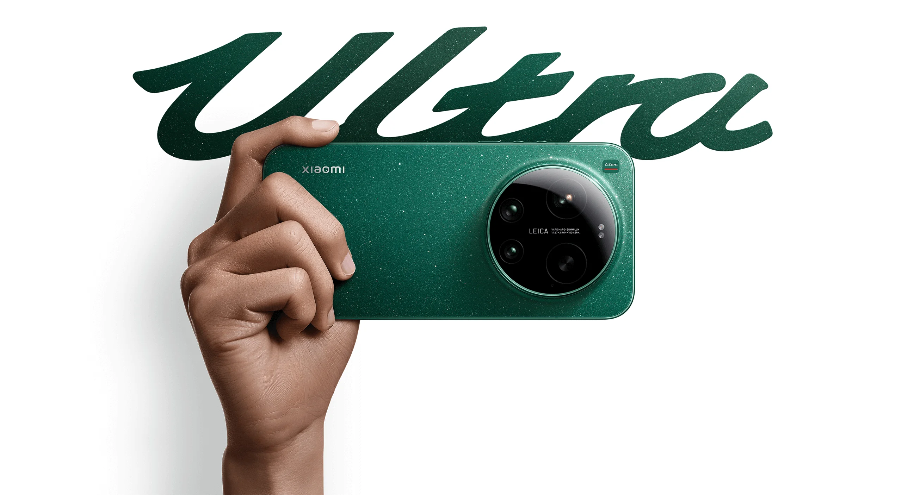
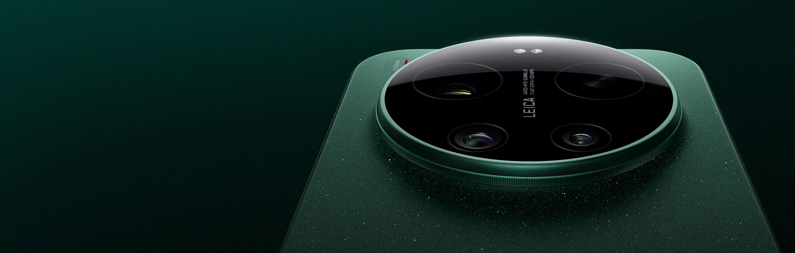
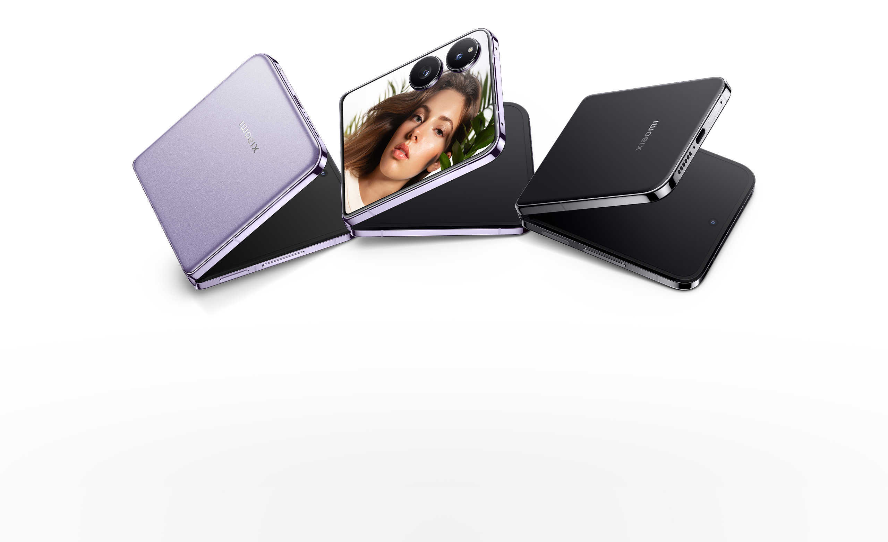
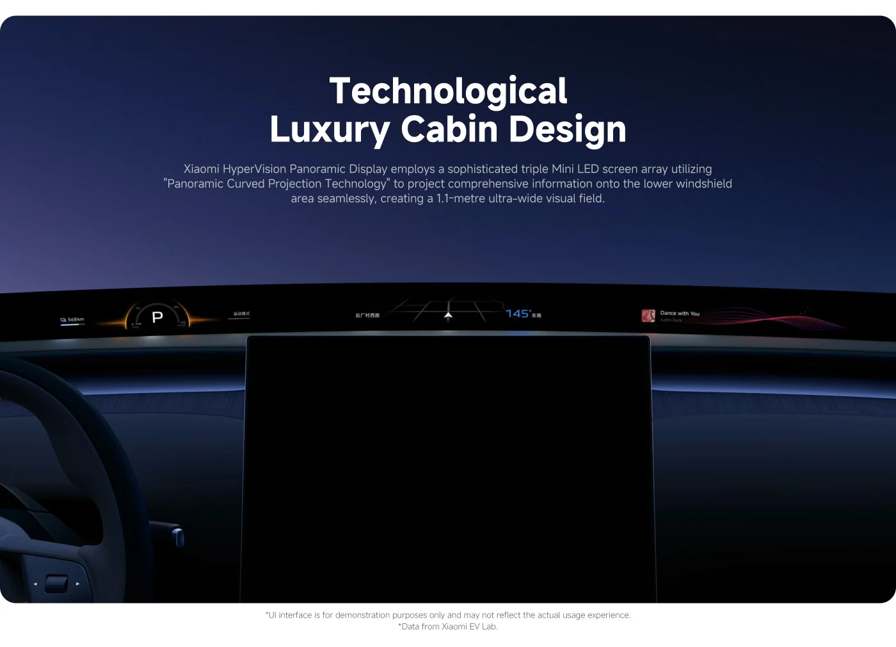
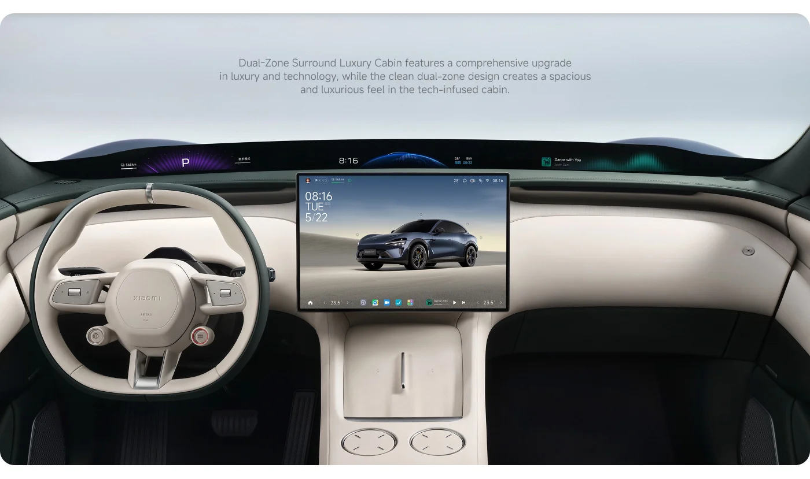

FIELD NOTE 02 / HUMAN × CAR × HOME
把每一块屏幕，连成同一个入口。
从 Xiaomi 17 Ultra 的影像，到 HyperOS 的跨端协作，再到 SU7 与 YU7 的座舱。这里不按产品目录排队，而是把一整套生活系统放在同一条动线上。

01 / PHONE SPECTRUM
先看设备，
再看它们如何协作。
小米的手机线不是一张静态清单：Ultra 把影像推到极限，数字系列压缩旗舰体验，MIX 探索形态，Redmi 把性能带到更广的价格带。

Xiaomi 17 Ultra
1 英寸主摄与徕卡长焦，把“远处也清晰”变成一个可以被反复调用的入口。
查看详情 ↗Xiaomi 17
更小的机身，仍然保留旗舰影像、性能与 HyperOS 3 的完整协同。
查看详情 ↗
MIX 系列
真实的 MIX Flip 折叠形态，把外屏、内屏与徕卡影像放进同一件随身设备。
查看详情 ↗
Redmi K / Note
以真实的 Redmi Note 15 Pro 为入口，把 200MP 影像、长续航与耐用结构带给更大的用户群。
查看详情 ↗下一代影像旗舰
这不是官方产品页。仅记录“更远焦段、更快端侧 AI、更轻机身”的设计方向，等待正式发布确认。
OPERATING LAYER / ACTIVE
让任务跟着人走，而不是困在某一块屏幕里。
当前版本聚焦跨设备流转；HyperOS 4 的未确认方向放在独立观察页签中，不与现有能力混写。
四个连续入口
从手机开始，在车机继续，回家后仍保持同一状态。
内容依据小米官方 HyperOS 3 页面整理；具体功能会因地区、设备和软件版本而异。
未发布信息保持为空，把关注点留给可以验证的方向。
概念方向：让系统理解“我要出门 / 我要专注”这类意图，再调度设备。
概念方向：手机、车机与家居屏幕共享同一组状态，而不是重复登录。
概念方向：在需要时出现，在完成任务后退回背景。
截至 2026-07-31，小米官方尚未公布 HyperOS 4 的完整发布时间、机型清单或功能规格。本区为个人概念记录。
XIAOMI EV / MOBILE SPACE
性能、座舱与家庭状态，在路上汇合。
轿车与 SUV 承担不同的出行需求，HyperOS 把导航、媒体和家庭设备状态带进同一段行程。



04 / ONE ECOSYSTEM
不是“买更多”，
是少做一次设置。
手机是入口，平板是第二块工作台，耳机和手表是身体上的提示，汽车是移动空间，家电则让回家这件事自动发生。
CONTEXT个人状态 / 场景意图
17 / MIX / Redmi
future watch: 4
移动座舱
回家即联动